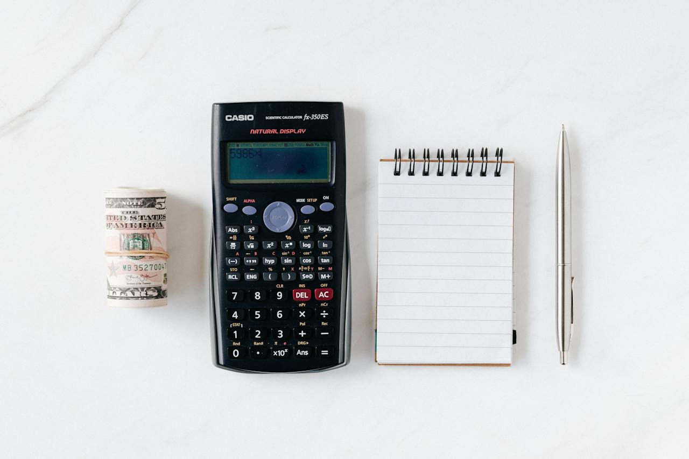
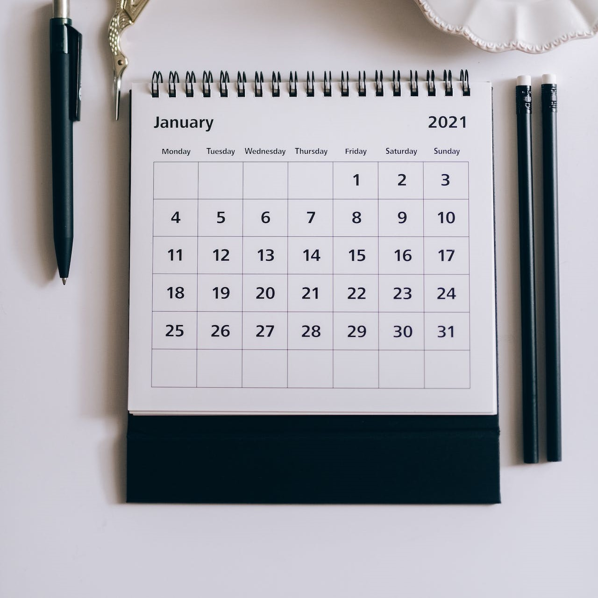

What is a Budget:
A budget is a financial plan that outlines your expected income and expenses over a specific period of time, such as a month or a year. It helps you manage your money by providing a framework for allocating your income towards different categories, such as housing, transportation, groceries, entertainment, savings, and debt repayment.
Budgeting allows you to prioritize your spending, track your progress, and make informed financial decisions. It can be a valuable tool for achieving your financial goals and maintaining control over your personal finances.
Why it Matters:
A budget matters for several reasons:
Financial Awareness:
Creating a budget gives you a clear picture of your financial situation. It helps you understand how much money you have, where it's going, and where you can make adjustments if needed. This awareness is crucial for making informed decisions and taking control of your finances.
Goal Setting:
A budget allows you to set specific financial goals and work towards achieving them. Whether it's saving for a vacation, paying off debt, or building an emergency fund, a budget helps you allocate resources effectively and track your progress.
Spending Control:
With a budget, you can prioritize your spending and ensure that your money is going towards what matters most to you. It helps you distinguish between essential and non-essential expenses, avoid overspending, and make intentional choices about how you use your money.
Debt Management:
A budget can be an effective tool for managing and reducing debt. By tracking your income and expenses, you can identify areas where you can cut back and allocate more money towards debt repayment. It provides a roadmap for becoming debt-free.
Financial Security:
A well-planned budget helps you build financial security by setting aside funds for emergencies and unexpected expenses. It establishes a safety net and reduces financial stress.
Future Planning:
Budgeting allows you to anticipate future expenses and plan for them in advance. Whether it's saving for retirement, purchasing a home, or funding education, a budget helps you allocate funds towards long-term goals.
In summary, a budget matters because it provides financial clarity, helps you achieve goals, enables spending control, aids in debt management, promotes financial security, and allows for effective future planning. It empowers you to make informed decisions, reduce financial stress, and work towards a more stable and prosperous financial future.
Top Things to Consider:
When creating a budget, here are some important factors to consider:
Income:
Start by assessing your total income, including salary, wages, freelance work, or any other sources of income. Having an accurate understanding of your income is crucial for planning your expenses.
Fixed Expenses:
Identify and prioritize your fixed expenses, such as rent/mortgage payments, utilities, loan payments, insurance premiums, and subscriptions. These are expenses that tend to stay consistent from month to month.
Variable Expenses:
Consider your variable expenses, which can fluctuate from month to month. This includes groceries, dining out, entertainment, transportation costs, and personal care. Look at your past spending patterns to estimate these expenses realistically.
Savings:
Allocate a portion of your income towards savings and financial goals. Whether it's building an emergency fund, saving for a down payment, or contributing to retirement accounts, saving should be an integral part of your budget.
Debt Repayment:
If you have outstanding debt, such as credit card balances, student loans, or car loans, allocate funds towards debt repayment. Determine how much you can comfortably pay each month to accelerate your progress towards becoming debt-free.
Prioritize Needs vs. Wants:
Clearly differentiate between essential expenses (needs) and discretionary expenses (wants). Ensure that your needs are covered before allocating funds towards wants. This helps you make informed decisions and avoid overspending.
Budgeting Tools:
Consider using budgeting tools or apps to help you track your income, expenses, and savings. These tools can simplify the process and provide insights into your financial habits.
Flexibility:
Be flexible with your budget and allow room for adjustments. Life circumstances and unexpected expenses may arise, so it's important to have the flexibility to adapt your budget as needed.
Regular Review:
Review your budget regularly to ensure it aligns with your financial goals and reflects any changes in your income or expenses. Adjustments may be necessary from time to time to stay on track.
Discipline and Accountability:
Budgeting requires discipline and accountability. Stick to your budget, track your spending, and hold yourself accountable for your financial decisions. It may take time to develop good budgeting habits, but the rewards are worth it.
By considering these factors, you can create a realistic and effective budget that aligns with your financial goals and helps you achieve greater control over your finances.
50/30/20 Rule:
The 50/30/20 rule is a popular budgeting guideline that suggests dividing your after-tax income into three main categories:
Needs:
Allocate 50% of your income to essential needs. These are expenses that are necessary for your basic living requirements, such as housing, utilities, transportation, groceries, healthcare, and minimum debt payments.
Wants:
Allocate 30% of your income to wants. These are discretionary expenses that enhance your lifestyle and bring enjoyment, such as dining out, entertainment, vacations, hobbies, and non-essential shopping.
Savings and Debt Repayment:
Allocate 20% of your income to savings and debt repayment. This category includes savings for emergencies, retirement, down payment on a home, investments, and accelerated debt repayment beyond minimum payments.
By following this rule, you prioritize your essential needs while leaving room for discretionary spending and building financial stability. It helps you strike a balance between enjoying your income and securing your financial future.
Keep in mind that the 50/30/20 rule is a general guideline, and you can adjust the percentages based on your individual circumstances. For example, if you have significant debt, you may choose to allocate a larger portion to debt repayment. It's essential to customize your budget based on your goals, income, expenses, and financial priorities.
Zero-Based Budgeting:
Zero-based budgeting (ZBB) is a budgeting approach where you assign a specific purpose to every dollar of your income, ensuring that your income minus expenses equals zero. With zero-based budgeting, you start each budgeting period from scratch, rather than relying on previous budgets or allocations. Here's how zero-based budgeting typically works:
Identify Income:
Begin by determining your total income for the budgeting period, which could be a month or a specific time frame.
List Expenses:
Make a comprehensive list of all your expenses, including both fixed and variable expenses. This can include rent/mortgage payments, utilities, groceries, transportation costs, debt payments, subscriptions, entertainment, savings, and other discretionary spending categories.
Assign Dollar Amounts:
Assign a specific dollar amount to each expense category based on your income. You'll need to consider your essential needs, financial goals, and priorities. It's important to allocate your income until you reach zero, meaning that you've assigned all your income to various expense categories.
Adjust and Prioritize:
If the initial allocations don't add up to zero, you may need to make adjustments by reducing or increasing certain expense categories. This process allows you to prioritize your spending and allocate funds based on what's most important to you.
Track and Monitor:
Throughout the budgeting period, track your actual spending against your planned allocations. This will help you identify any discrepancies, make necessary adjustments, and stay on top of your financial progress.
Zero-based budgeting promotes a proactive approach to budgeting, where you consciously decide where every dollar goes. It can help you gain better control over your finances, identify unnecessary expenses, prioritize savings, and align your spending with your financial goals.
It's worth noting that zero-based budgeting requires regular review and adjustment as your income, expenses, and financial circumstances change. By starting from zero each time, you ensure that your budget remains flexible and responsive to your evolving needs.
Envelope System:
The envelope system is a budgeting method that involves allocating cash into different envelopes designated for specific spending categories. It is a physical representation of your budget and helps you manage your money by visually separating and tracking your expenses. Here's how the envelope system typically works:
Identify Spending Categories:
Determine the key spending categories for your budget, such as groceries, dining out, transportation, entertainment, clothing, and any other areas where you spend money.
Assign Envelopes:
Get a set of envelopes and label each one with a spending category. Allocate a specific amount of cash for each category based on your budgeted amounts.
Allocate Cash:
Withdraw the total amount of cash you've allocated for your budgeted period, such as a week or a month. Divide this cash among the corresponding envelopes according to your spending categories.
Use Envelopes for Expenses:
Whenever you make a purchase within a specific spending category, use the cash from the corresponding envelope. For example, if you're buying groceries, take the cash from the "groceries" envelope.
Track and Monitor:
As you spend from each envelope, keep track of the remaining cash. This visual representation allows you to see how much money is left for each spending category. It helps you stay aware of your spending and make informed decisions about where to allocate your remaining funds.
Replenish Envelopes:
When the cash in an envelope is depleted, you have reached the spending limit for that category. At this point, you can choose to either wait until the next budgeting period or reallocate funds from other envelopes if necessary.
The envelope system is effective because it provides a tangible limit to your spending. It encourages you to stay within your allocated amounts and avoid overspending. It can also help you prioritize your spending by making intentional choices about how you use your cash.
While physical envelopes are commonly used, you can also adapt the envelope system digitally using budgeting apps that allow you to allocate and track funds within specific spending categories.
Note that the envelope system works best for categories that can be paid in cash. For online or card-based transactions, you may need to transfer funds from the corresponding envelope into a separate account or track those expenses using alternative methods.
80/20 Rule:
The 80/20 rule in budgeting, also known as the Pareto Principle, suggests allocating a specific percentage of your income towards saving and discretionary spending. The rule advises putting 20% of your income towards savings or investments and using the remaining 80% for expenses. Here's a breakdown of how the 80/20 rule typically applies to budgeting:
Savings and Investments (20%):
Allocate 20% of your income towards savings, investments, and financial goals. This can include building an emergency fund, contributing to retirement accounts, saving for a down payment on a home, or other long-term objectives.
Expenses (80%):
Use the remaining 80% of your income for your day-to-day expenses, including essential needs (housing, utilities, groceries) and discretionary spending (dining out, entertainment, hobbies, etc.). This category covers your regular expenses and allows you to enjoy your income while maintaining financial stability.
The 80/20 rule emphasizes the importance of saving and building wealth while still allowing room for enjoying your income. It encourages individuals to prioritize their financial well-being by consistently allocating a significant portion of their income towards savings.
It's worth noting that the 80/20 rule is a general guideline, and you can adapt it to your personal circumstances and financial goals. If you have specific savings targets or higher expense obligations, you may need to adjust the percentages accordingly. The key is to strike a balance between saving for the future and meeting your current financial needs.
Pay Yourself First:
The "pay yourself first" method is a budgeting strategy that prioritizes saving or investing a portion of your income before allocating funds to other expenses. It involves treating savings as a non-negotiable expense and making it the first financial priority. Here's how the "pay yourself first" method typically works:
Set a Savings Goal:
Determine how much you want to save or invest regularly. It could be a percentage of your income or a specific dollar amount.
Automate Savings:
Arrange for automatic transfers from your checking account to a separate savings account or investment account. Ideally, this transfer should occur as soon as you receive your income. By automating the process, you ensure that your savings are consistently and effortlessly set aside.
Budget with Remaining Income:
After allocating funds to your savings, use the remaining income to cover your expenses, such as housing, utilities, groceries, and other financial obligations.
Outlook:
By paying yourself first, you prioritize your long-term financial goals and ensure that savings become a consistent habit. It helps you build a financial cushion, accumulate wealth, and prepare for future needs or unexpected expenses.
Benefits:
Consistent Savings:
By automating savings, you remove the temptation to spend the money before saving it. It establishes a routine of regular saving, helping you accumulate funds over time.
Financial Discipline:
Treating savings as a priority demonstrates financial discipline and commitment to your goals. It helps you avoid the tendency to spend all of your income without saving for the future.
Emergency Preparedness:
Building an emergency fund becomes easier with the "pay yourself first" method. By consistently saving a portion of your income, you create a financial safety net to cover unexpected expenses or income disruptions.
Long-Term Wealth Accumulation:
Prioritizing savings from an early stage allows you to take advantage of compound interest and long-term investment growth. It sets you on a path to accumulate wealth and achieve financial independence over time.
Remember, the specific amount you choose to "pay yourself" depends on your financial goals, income level, and expenses. The key is to make saving a regular and intentional practice, allocating funds for your future financial well-being.
30-Day Rule:
The 30-day rule is a budgeting principle that encourages you to wait for 30 days before making a non-essential purchase. The rule is designed to help you avoid impulsive buying and make more deliberate spending decisions. Here's how the 30-day rule typically works:
Identify Non-Essential Purchases:
The 30-day rule applies to discretionary expenses or purchases that are not essential for your immediate needs. This can include items like electronics, clothing, gadgets, home decor, and other non-essential items.
Delay the Purchase:
When you have the urge to buy something that falls under the non-essential category, resist the impulse to make an immediate purchase. Instead, make a note of the item and set a waiting period of 30 days.
Revisit the Purchase After 30 Days:
After the waiting period, reassess your desire to make the purchase. Take time to consider if the item is still something you truly need or if it was simply a fleeting impulse.
Make an Informed Decision:
During the 30-day waiting period, you can research the item, compare prices, read reviews, and evaluate whether it fits within your budget and aligns with your long-term financial goals. This period allows you to make a more informed and intentional decision about the purchase.
By implementing the 30-day rule, you give yourself a cooling-off period to reflect on whether a purchase is necessary or if it was driven by impulse or temporary desire. This rule helps prevent impulsive spending, reduce buyer's remorse, and ensure that your budget is used for items that truly align with your needs and priorities.
It's important to note that the 30-day rule may not be suitable for time-sensitive purchases or essential items that are required immediately. However, for discretionary spending, it can be an effective strategy to promote mindful and intentional consumption.
Tracking your Budget:
Tracking and analyzing your budget is essential for several reasons:
Financial Awareness:
Tracking your budget allows you to have a clear understanding of your income and expenses. It gives you a comprehensive view of where your money is going, enabling you to make informed decisions about your finances.
Expense Management:
By monitoring your budget, you can identify areas where you may be overspending or where you can cut back. This awareness helps you make adjustments to your spending habits and prioritize your expenses based on your financial goals.
Goal Progression:
Tracking your budget helps you measure your progress towards specific financial goals. Whether you're saving for a down payment, paying off debt, or building an emergency fund, monitoring your budget allows you to see how your actions align with your goals and make necessary adjustments along the way.
Financial Accountability:
Tracking your budget creates a sense of accountability for your financial choices. It encourages you to take responsibility for your spending and helps you stay disciplined in sticking to your budgeted amounts.
Early Problem Detection:
Regularly analyzing your budget can help you identify potential financial issues or patterns of overspending before they become significant problems. This allows you to proactively address them and make necessary adjustments to stay on track.
Improved Financial Decision-Making:
When you have a clear understanding of your budget, you can make more informed decisions about financial matters. It helps you evaluate the affordability of big-ticket purchases, determine whether you can take on additional financial commitments, and consider the long-term impact of your choices.
Financial Flexibility:
By tracking your budget, you gain control over your finances and increase your financial flexibility. You can allocate resources more efficiently, adjust spending as needed, and have a better overall picture of your financial situation.
Remember, tracking and analyzing your budget should be an ongoing process. Regularly review your income, expenses, and financial goals to ensure that your budget remains aligned with your changing circumstances and priorities.
Automated Saving and Investing:
Automated saving and investing can be a very wise decision and refers to the process of setting up automatic transfers or contributions from your income to designated savings or investment accounts. It is a budgeting strategy that streamlines the savings and investment process by eliminating the need for manual transfers. Here's how automated saving and investing typically work:
Set up Automatic Transfers:
Determine the amount you want to save or invest regularly. Then, arrange for automatic transfers from your primary bank account to a separate savings account or investment account. You can typically set up these transfers through your bank's online banking system or by contacting your financial institution.
Choose the Frequency:
Decide on the frequency of the transfers based on your financial goals and budgeting preferences. You can set up transfers to occur on a monthly, bi-weekly, or weekly basis, depending on your income and expenses.
Allocate the Funds:
Specify the destination for the transferred funds. You might choose a dedicated savings account for emergency funds, short-term goals, or specific purposes like a down payment on a house. Alternatively, you may direct the funds to an investment account such as a retirement account (e.g., 401(k), IRA) or a brokerage account for long-term investing.
Making Adjustments:
Monitor and Adjust: Regularly review your automated savings and investment contributions to ensure they align with your financial goals. As your income or financial priorities change, you may need to adjust the amounts or destinations of the automated transfers.
Benefits:
Automated saving and investing offer several benefits:
Consistency:
By automating the process, you ensure that savings and investments occur consistently without relying on manual actions. It helps you maintain discipline and removes the risk of forgetting or delaying contributions.
Simplification:
Automating savings and investments simplifies your financial routine. Once the transfers are set up, you can focus on managing your budget with the remaining funds, knowing that your savings and investments are being taken care of automatically.
Goal Progression:
Automating savings and investments helps you make progress toward your financial goals more efficiently. Regular contributions accumulate over time, helping you build wealth, prepare for emergencies, or work toward specific milestones.
Reduced Temptation:
By moving the funds automatically, you reduce the temptation to spend the money before saving or investing it. It helps you stay committed to your financial goals and avoid impulsive spending.
Automated saving and investing can be a powerful tool to develop a consistent savings habit and make progress towards your financial goals. However, it's important to regularly review your savings and investment strategy to ensure it aligns with your evolving needs and objectives.